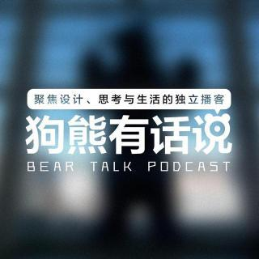
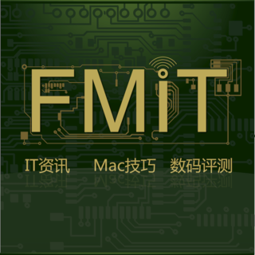
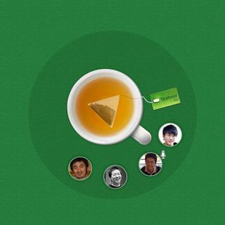
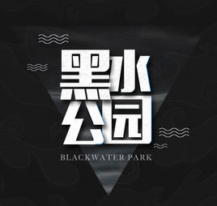

我的 Podcasts 推荐
以前由于通勤时间比较久，我订阅了不少 podcast 在路上听，时间久了就积累了不少播客，不过有很多节目也就渐渐不跟了，下面列出的是我大浪淘沙下来觉得真的不错的播客。
狗熊有话说

大狗熊似乎是我第一次听的播客，应该是 iTunes 推荐的，他的声音非常好听（适合入睡前听），内容也大都是我感兴趣的，主要话题就像他的 slogan 那样：设计，思考与生活。
重点推荐：狗熊月读，特别是关于科幻小说的书。
友的聊播客
脱口秀播客，旗下有很多子栏目，科技，游戏，影视都有涉及。
不同的子栏目风格迥异，不要因为某一期节目不合胃口就放弃整个播客哦。
FMIT

主要是苹果相关的话题，使用技巧，设备推荐等。
重点推荐他们在发布会前后的点评，在等发布会的时候听听很有趣。
糖蒜广播
自称网络音乐广播播客，不过也涉及很多社会热点话题。
音乐方面我倒也就随便听听，个人更喜欢他们的影视类节目。
Teahour.FM

Ruby 社区的几位程序员主持的一档节目，内容都是程序员感兴趣的话题。
几乎每一期都强烈推荐，话题都非常吸引人。
鬼影人间
小时候挺爱看鬼故事的，没想到真有这样一档灵异类主题的节目，不仅仅是有声小说，也包含真人真事的访谈。
他们的长篇有声小说都挺长的，建议直接花钱购买。
IPN 旗下众多播客
《IT 公论》，《一天世界》，《内核恐慌》。。。都是 IPN 旗下的节目，当然还有其它众多节目，不过作为程序员我就关注前面提到的三个。
另外 《味之道》在无聊的时候也可以听听（不过不要半夜听，不然后果自负）
代码时间
面向程序员的中文播客节目，作为主播之一就不自卖自夸了。
黑水公园

有很多子节目，电影，小说，灵异都有涉及。